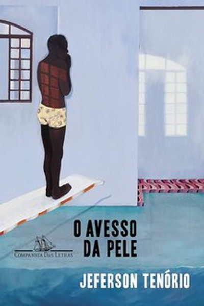
O avesso da pele Jeferson Tenório · 2020 5 ocorrências · RS, PR, GO, MS, SC · 2024 4 de 5 revertidasLivros
As obras que foram alvo de alguma medida. Cada uma tem ficha própria, que reúne todas as ocorrências, as justificativas declaradas e os responsáveis identificados, inclusive quando o mesmo livro foi alvo em vários estados.
Fichas
Conjuntos sem lista título a título (a obra de um autor, um lote de exemplares) aparecem como uma ficha até serem desmembrados.
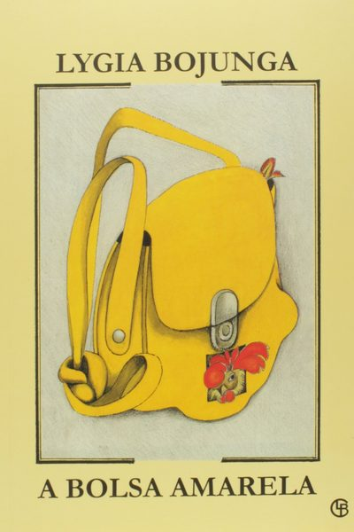
A bolsa amarela Lygia Bojunga · 1976 2 ocorrências · DF, SP · 2019–2026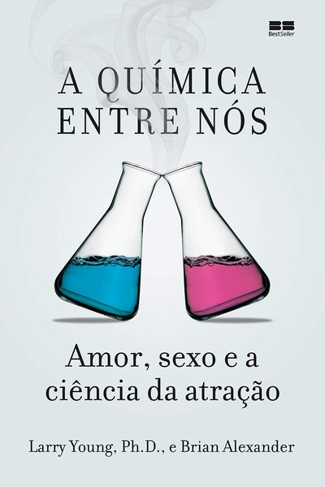
A química entre nós Larry Young e Brian Alexander · 2012 1 ocorrência · SC · 2023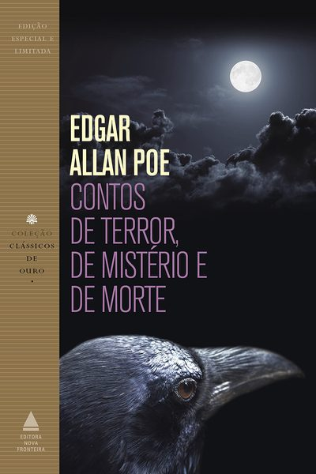
Contos de terror, de mistério e de morte Edgar Allan Poe 1 ocorrência · RO · 2020 Revertido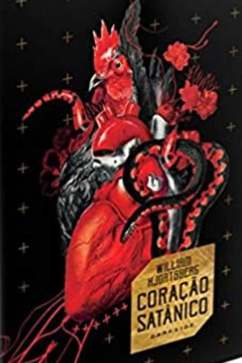
Coração Satânico William Hjortsberg · 1978 1 ocorrência · SC · 2023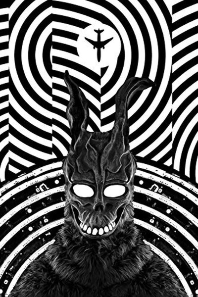
Donnie Darko Richard Kelly 1 ocorrência · SC · 2023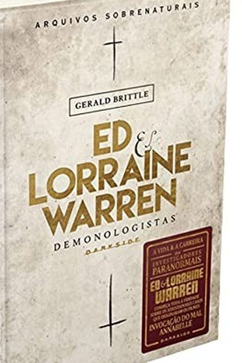
Ed & Lorraine Warren: demonologistas — arquivos sobrenaturais Gerald Brittle · 1980 1 ocorrência · SC · 2023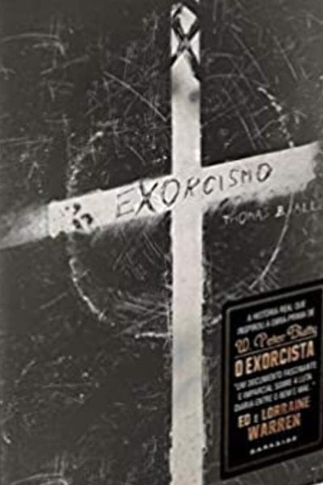
Exorcismo Thomas B. Allen · 1993 1 ocorrência · SC · 2023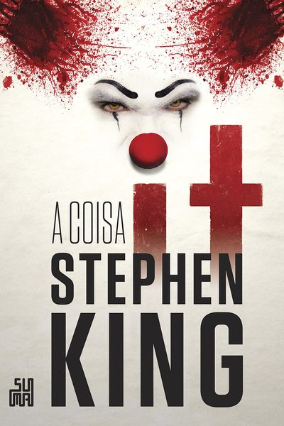
It: A coisa Stephen King · 1986 1 ocorrência · SC · 2023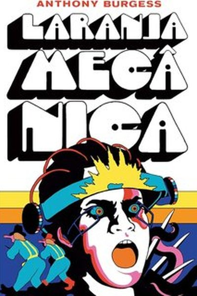
Laranja Mecânica Anthony Burgess · 1962 1 ocorrência · SC · 2023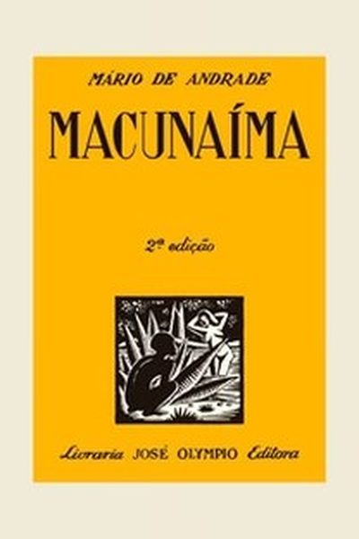
Macunaíma Mário de Andrade · 1928 1 ocorrência · RO · 2020 Revertido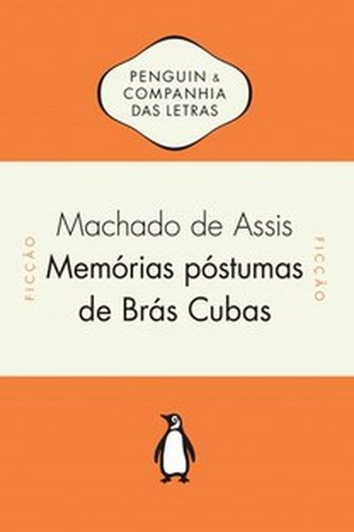
Memórias póstumas de Brás Cubas Machado de Assis · 1881 1 ocorrência · RO · 2020 Revertido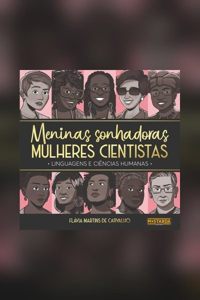
Meninas sonhadoras, mulheres cientistas Flávia Martins de Carvalho 1 ocorrência · SP · 2024 Revertido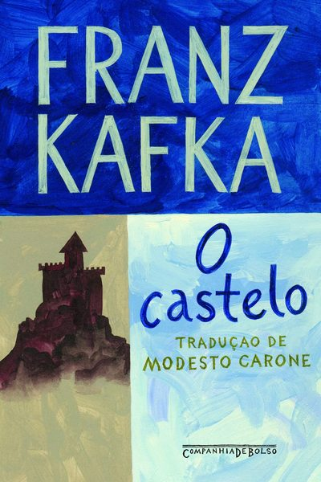
O castelo Franz Kafka · 1926 1 ocorrência · RO · 2020 Revertido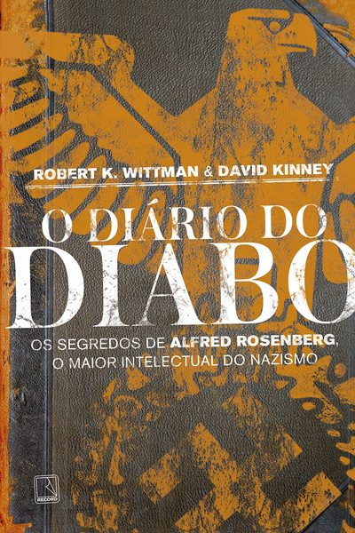
O diário do diabo: os segredos de Alfred Rosenberg, o maior intelectual do nazismo Robert K. Wittman e David Kinney · 2016 1 ocorrência · SC · 2023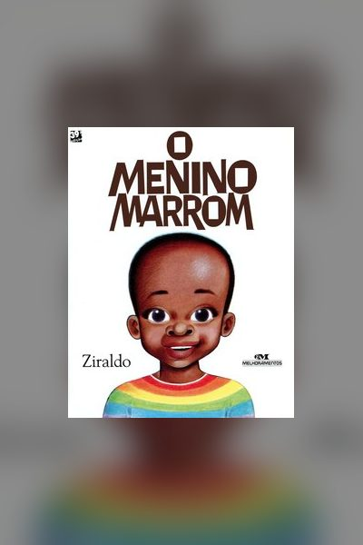
O menino marrom Ziraldo · 1986 1 ocorrência · MG · 2024 Revertido